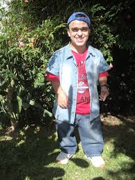
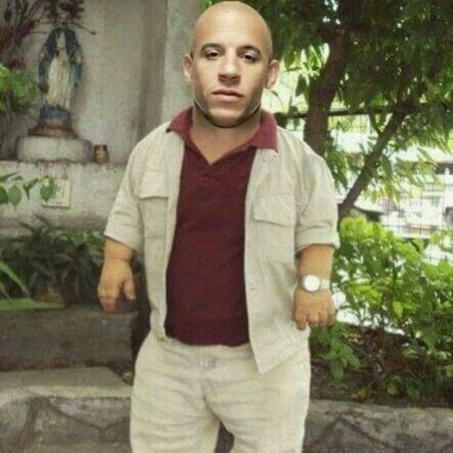
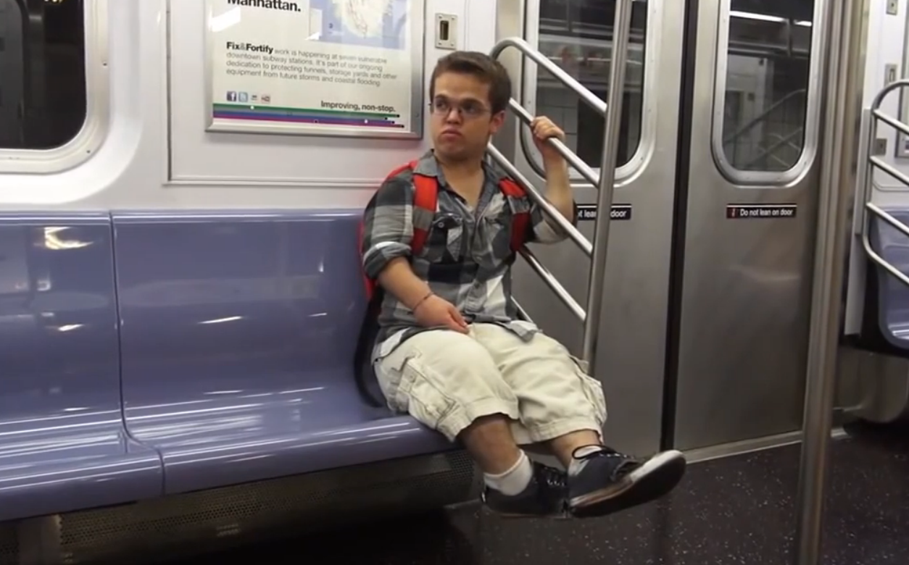

Olá. Você acessou a Anão Shop BR™, a loja principal da DwarfShop Enterprises. Atualmente, temos um estoque total de mais de 400 mil anões em estoque disponível para compra agora, e totalmente online! Somos conhecidos também por sermos os responsáveis pela famosa venda dos anões do canal multimilionário RezendeEvil. Sim, isso mesmo. Você deve se lembrar bem dos famosos anões ladrões de calcinhas de pessoas já cônjudes de seus amigos. Caso você esteja interessado em mais informações, ou interessado em realizar o sonho de possuir um anão em casa, Faça uma compra aqui, é totalmente online, seguro, e barato. Boa compra!
Este anão está em um dos estoques mais concorridos do ano. Chamado de 'Anão Dançante', sua maior especialidade é (óbvio) dançar. Atualmente, ele se encontra no preço de R$350.000,00 , pois é raro e suas especialidades são """fortemente""" úteis, principalmente em boates, raves, e o churrasco em família com aquele seu tio do pavê.

Por sua vez, o famoso 'Anão Jardineiro'. Também se encontra em um estado raríssimo, custando um total de 349 mil, 999 reais e 98 centavos. A sua função é bem clara e simples, e adivinha: faz jús ao nome dele. Sua função é JARDINAR. Sim, também fiquei surpeso e emocionado quando recebi a notícia. Ele está no mesmo estoque que o Anão Dançante, porém, uma casa atrás. É muito utilizado para cortar mato.
E este é o grande 'Verme de Barriga'. Chamado assim pois ele tem o tamanho de um verme, e tem barriga, do contrário de pessoas que têm barriga de verme. Custando atualmente uma coca zero e um abraço, ele está em 4º no ranking de anões menos desejados, pois só serve para pedir dinheiro, gastar dinheiro em cerveja (muitas vezes o que ele pede pra você) e comer sua comida.

Este é o famoso 'vin dino' pois ele tem o tamanho de dinossauros. Nesse caso, o dinossauro do tamanho dele são as galinhas, que são decendentes de dinossauros. Enfim, atualmente, ele é classificado como uma maquete-scp do Vin Diesel. Ele é classificado como scp pois não se sabe até hoje como algo tão pequeno pode ter vida, sendo que não cabe nem um pé nele. Ele custa atualmente 430 mil reais e vai ser vendido em leilão mês que vem.
Aqui se encontra o anão 'Pai de Família do Interior Rebaixado', pois é idêntico a um pai de familia do interior rebaixado, age como um pai de família do interior rebaixado, e é um pai de família do interior rebaixado. Nesta foto ele se encontra brigando com o cidadão que tirou a foto por causa da cerveja que ele roubou do pai de família do interior rebaixado. Custando atualmente 45 mil reais. Um fato curioso é que ele se anunciou nesta loja em 2019, porém um dia depois dele se anunciar aqui, ele alega que não se anunciou e nos processou por causa disso. O processo ocorre até hoje.

O anão que está na foto acima é o famoso 'Anão Estudante'. Ele faz adm na escola mais próxima dele e ele vai de bicicleta, ou quando o pai dele não está no bar bebendo, o pai dele dá dinheiro pra ele ir de metrô. Em dias de sorte, ele é assaltado 5 vezes. Todo dia ele perde 1 real na rua, quando não é roubado pelos próprios amigos, pois ele estuda em escola pública. Ele se colocou a venda por depressão e pobreza, e agora está custando 90 mil reais.